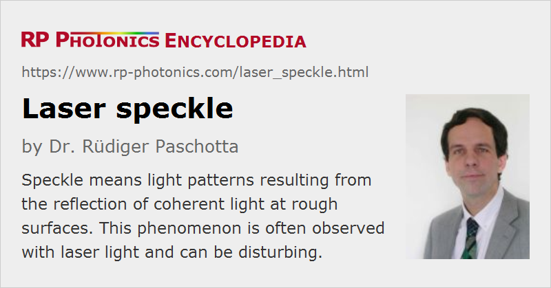

Laser Speckle
Definition: light patterns resulting from the reflection of coherent light at rough surfaces
How to cite the article; suggest additional literature
Author: Dr. Rüdiger Paschotta
The term speckle refers to a random granular pattern which can be observed e.g. when a highly coherent light beam (e.g. from a laser) is diffusely reflected at a surface with a complicated (rough) structure, such as a piece of paper, white paint, a display screen, or a metallic surface. This phenomenon results from the interference of different reflected portions of the incident beam with random relative optical phases. Even minor changes of the conditions, such as of the illuminated spot or the direction of the incident laser beam, can change the detailed shape of a speckle pattern.
Speckle patterns can severely degrade the image quality of laser projection displays, or disturb position measurements with laser pointers. Speckle can often be avoided, e.g. by using a light source with sufficiently large optical bandwidth (short coherence length) such as a superluminescent source. (How much bandwidth is required for that purpose depends on the situation.) For projection displays, one may also work with an optimized screen. However, there are also applications of speckle, e.g. in speckle interferometry.
The complicated intensity patterns observed at the ends of multimode fibers are also sometimes called speckle. They result from the interference of many propagation modes, where the relative phases depend on the detailed launching conditions.
Suppliers
The RP Photonics Buyer's Guide contains 5 suppliers for laser speckle reduction components. Among them:
Questions and Comments from Users
Here you can submit questions and comments. As far as they get accepted by the author, they will appear above this paragraph together with the author’s answer. The author will decide on acceptance based on certain criteria. Essentially, the issue must be of sufficiently broad interest.
Please do not enter personal data here; we would otherwise delete it soon. (See also our privacy declaration.) If you wish to receive personal feedback or consultancy from the author, please contact him e.g. via e-mail.
By submitting the information, you give your consent to the potential publication of your inputs on our website according to our rules. (If you later retract your consent, we will delete those inputs.) As your inputs are first reviewed by the author, they may be published with some delay.
Bibliography
| [1] | J. W. Goodman, “Some fundamental properties of speckle”, J. Opt. Soc. Am. 66 (11), 1145 (1976), doi:10.1364/JOSA.66.001145 |
| [2] | K. Creath, “Phase-shifting speckle interferometry”, Appl. Opt. 24 (18), 3053 (1985), doi:10.1364/AO.24.003053 |
| [3] | J. C. Dainty, Laser Speckle and Related Phenomena, Springer, Berlin (1975) |
See also: coherence, coherence length, linewidth, superluminescent sources, The Photonics Spotlight 2007-06-24
and other articles in the category general optics
|  |
If you like this page, please share the link with your friends and colleagues, e.g. via social media:
These sharing buttons are implemented in a privacy-friendly way!